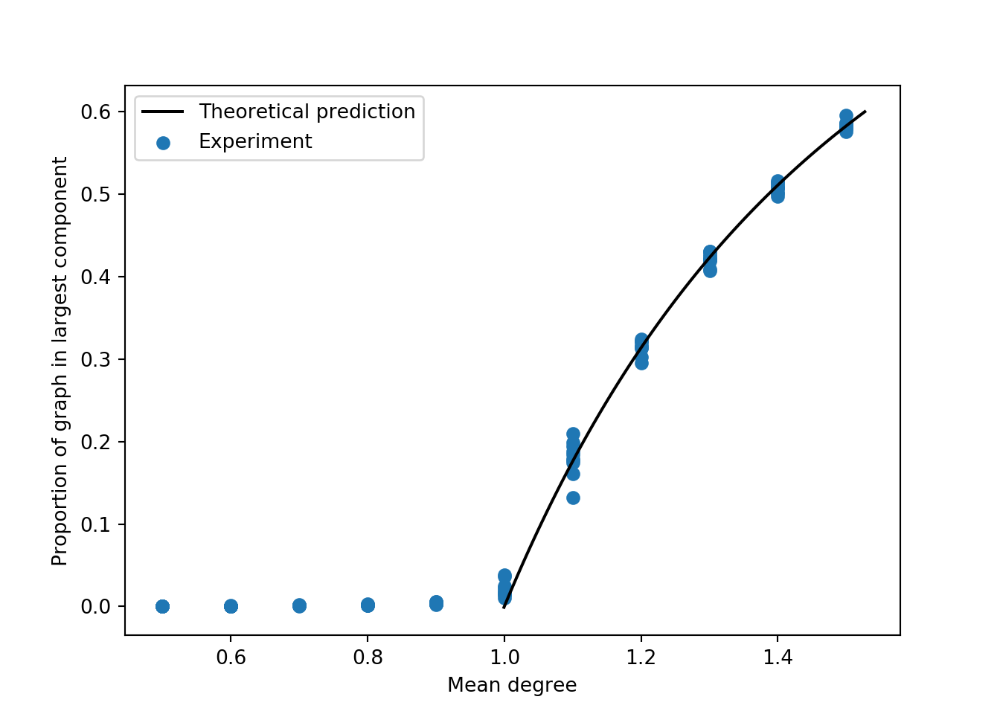

A random graph is a probability distribution over graphs. In this set of lecture notes, we’ll begin our exploration of several random graphs.
2.1 Why Random Graphs?
Why should we even study random graphs? There are a few reasons!
Random Graphs as Insightful Models
Random graphs allow us to build our intuition and skills in the study of networks. In many simple random graphs, quantities of interest (clustering coefficients, diameters, etc) can be calculated with pencil and paper. This allows us to build mathematical insight into the structure of many real-world models, without the need for detailed simulations.
Random Graphs as Mathematical Puzzles
Many properties of even simple random graphs are still under investigation by research mathematicians. While some properties can be calculated simply, others require extremely sophisticated machinery in order to understand. There are many mathematicians who spend their careers studying random graphs, and their cousins, random matrices.
Random Graphs as Null Hypotheses
Suppose that you compute the global clustering coefficient (Definition 1.11) of a graph and find it to be \(0.31\). How do we interpret that? Is that high? Low? In this case, we should ask: compared to what? Random graphs allow us one way to make a comparison: that clustering coefficient is “high” if it’s larger than the clustering coefficient in a suitably chosen, comparable random graph. How to choose a comparable random graph is an important question, and the answer is not always clear!
In this way, random graphs often serve as the null hypothesis, in exactly the same way you might have heard of the null hypothesis for other kinds of statistical tests.
Random Graphs and Statistical Inference
Many statistical algorithms for tasks like graph clustering, ranking, and prediction come from random graph models. The idea, generally speaking, is to imagine that we observe a graph, and then try to make the best educated guess possible about the model that generated that graph. This is classical statistical inference, and we’ll see a few examples later in the course.
2.2 The Erdős–Rényi Model
The model of Erdős and Rényi (1960) is the simplest and most fundamental model of a random graph. Our primary interest in the ER model is for mathematical insight and null modeling. The ER model is mostly understood in its major mathematical properties, and it’s almost never used in statistical inference.
The ER model is, however, a building block of models that are used in statistical inference. The stochastic blockmodel, for example, is often used for graph clustering and community detection. In its simplest form, it’s a bunch of ER graphs glued together.
Definition 2.1 (Erdős–Rényi Random Graph)
An Erdős–Rényi random graph with \(n\) nodes and connection probability \(p\), written \(G(n,p)\), is a random graph constructed by placing an edge with probability \(p\) between each pair of distinct nodes.
We can imagine visiting each possible pair of edges \((i,j)\) and flipping a coin with probability of heads \(p\). If heads, we add \((i,j) \in E\); otherwise, we don’t.
Exercise: Let \(i\) be a fixed node in a \(G(n,p)\) graph, and let \(K_i\) be its (random) degree. Show that \(K_i\) has binomial distribution with success probability \(p\) and \(n-1\) trials.
Exercise: Show that \(\mathbb{E}[K_i] = p(n-1)\).
Clustering Coefficient
Recall that both local and global clustering coefficients were defined in terms of a ratio of realized triangles to possible triangles. Analyzing ratios using probability theory can get tricky, but we can get a pretty reliable picture of things by computing the expectations of the numerator and denominator separately.
Let’s take the global clustering coefficient (Definition 1.11). For this, we need to compute the total number of triangles, and the total number of wedges.
How many triangles are there? Well, there are \(\binom{n}{3}\) ways to choose 3 nodes from all the possibilities, and the probability that all three edges exist to form the triangle is \(p^3\). So, in expectation, there are \(\binom{n}{3}p^3\) triangles in the graph.
How many wedges are there? Well, each triple of nodes contains three possible wedges, and the probability of any given wedge existing is \(p^2\). So, the expected number of wedges is \(\binom{n}{3}p^2\). Our estimate for the expected clustering coefficient is that it should be about\(p\), although we have been fast and loose with several mathematical details to arrive at this conclusion.
2.3 Sparsity
We are very often interested in the sparse Erdős–Rényi model. Intuitively, the idea of sparsity is that there are not very many edges in comparison to the number of nodes.
Definition 2.2
We say that a \(G(n,p)\) graph is sparse when \(p = c/(n-1)\) for some constant \(c\).
A consequence of sparsity is that \(\mathbb{E}[K_i] = c\); i.e. the expected degree of a node in sparse \(G(n,p)\) is constant. When studying sparse \(G(n,p)\), we are almost always interested in the case \(n\rightarrow \infty\).
Clustering
What does this imply for our estimation of the global clustering coefficient from before? Well, we expect the global clustering coefficient to be about\(p\), and if \(p = c/(n-1)\), then \(p \rightarrow 0\).
The need to move beyond the ER model to develop sparse graphs with clustering coefficients was part of the motivation of Watts and Strogatz (1998), a famous paper that introduced the “small world model.”
Sparse Erdős–Rényi graphs have vanishing clustering coefficients.
Figure 2.1 shows how the global clustering coefficient of a sparse Erdős–Rényi random graph decays as we increase \(n\). Although the estimate that the global clustering coefficient should be equal to \(p\) was somewhat informal, experimentally it works quite well.
Code
import networkx as nxfrom matplotlib import pyplot as pltimport numpy as npc =5N = np.repeat(2**np.arange(5, 15), 10)def global_clustering(n, c): G = nx.fast_gnp_random_graph(n, c/(n-1))return nx.transitivity(G)T = [global_clustering(n, c) for n in N]fig, ax = plt.subplots(1)theory = ax.plot(N, c/(N-1), color ="black", label ="Estimate")exp = ax.scatter(N, T, label ="Experiments")semil = ax.semilogx()labels = ax.set(xlabel ="Number of nodes", ylabel ="Global clustering coefficient")plt.show()
Figure 2.1: Each point gives the global clustering coefficient of an ER graph with mean degree \(c = 5\) and specified number of nodes. The black line gives the estimate \(T = p = c/(n-1)\) for the clustering coefficient that we computed earlier. The function nx.fast_gnp_random_graph() is a special function from NetworkX for generating ER random graphs quickly; you’ll learn about how it works in an upcoming homework assignment.
Cycles and Local Tree-Likeness
Definition 2.3
A cycle is a walk that does not repeat edges and ends at the same node that it begins.
A triangle is an example of a cycle of length \(3\).
Theorem 2.1
In the sparse \(G(n,p)\) model, for any length \(k\), the probability that there exists a cycle of length \(k\) attached to node \(i\) shrinks to 0 as \(n \rightarrow \infty\).
You’ll prove a generalization of Theorem 2.1 in an upcoming homework problem.
Graphs in which cycles are very rare are often called locally tree-like. A tree is a graph without cycles; if cycles are very rare, then we can often use techniques that are normally guaranteed to only work on trees without running into (too much) trouble.
Path Lengths
How far apart are two nodes in \(G(n,p)\)? Again, exactly computing the length of geodesic paths involves some challenging mathematical detail. However, we can get a big-picture view of the situation by asking a slightly different question:
See Riordan and Wormald (2010) and references therein.
Given two nodes \(i\) and \(j\), what is the expected number of paths of length \(k\) between them?
Call the number of \(k\)-paths between \(i\) and \(j\)\(R(k)\). Let \(r(k) = \mathbb{E}[R(k)]\). Let’s estimate \(r(k)\).
First, we know that \(r(1) = p\). For higher values of \(k\), we’ll use the following idea: in order for there to be a path of length \(k\) from \(i\) to \(j\), there must be a node \(\ell\) such that:
There exists a path from \(i\) to \(\ell\) of length \(k-1\). In expectation, there are \(r(k-1)\) of these.
There exists a path from \(\ell\) to \(j\) of length \(1\). This happens with probability \(p\).
There are \(n-2\) possibilities for \(\ell\) (excluding \(i\) and \(j\)), and so we obtain the approximate relation
\[
r(k) \approx (n-2)p r(k-1)\;.
\]
Why is this an approximation? Well, some of the paths between \(i\) and \(\ell\) that are counted in \(r(k-1)\) could actually include the edge \((j, \ell)\)already. An example is \((i,j), (j,\ell)\). In this case, the presence of edge \((j,\ell)\) is not independent of the presence of the path between \(i\) and \(\ell\). The derivation above implicitly treats these two events as independent. Again, because cycles are rare in large, sparse ER, this effect is small when \(k\) is small.
Proceeding inductively and approximating \(n-2 \approx n-1\) for \(n\) large, we have the relation
What path length \(k\) do I need to allow to be confident that there’s a path between nodes \(i\) and \(j\)?
Well, suppose we want there to be \(q\) paths. Then, we can solve \(q = c^{k-1}p\) for \(k\), which gives us:
\[
\begin{aligned}
q &= c^{k-1}p \\
\log q &= (k-1)\log c + \log p \\
\log q &= (k-1)\log c + \log c - \log n \\
\frac{\log q + \log n}{\log c} &= k
\end{aligned}
\]
Here, I’ve also approximated \(\log n-1 \approx \log n\) for \(n\) large.
So, supposing that I want there to be at least one path in expectation (\(q = 1\)), I need to allow \(k = \frac{\log n}{\log c}\). This is pretty short, actually! For example, the population of the world is about \(8\times 10^9\), and Newman estimates that an average individual knows around 1,000 other people; that is, \(c = 10^3\) in the world social network. This seems a little high to me (maybe I’m antisocial), but the resulting value of \(k\) here is around 3.3.
In other words, this calculation suggests that, if the world were an ER network, it would be the case that any two individuals would be pretty likely to have at least one path between them of length no longer than \(4\).
More formal calculations regarding the diameter of the ER graph confirm that the diameter of the ER graph grows slowly as a function of \(n\), even in relatively sparse cases.
A Caveat
If you spend some time looking at Equation 2.1, you might find yourself wondering:
Hey, what happens if \(c \leq 1\)?
Indeed, something very interesting happens here. Let’s assume \(c < 1\) (i.e. we’re ignoring the case \(c = 1\)), and estimate the expected number of paths between \(i\) and \(j\) of any length. Using Equation 2.1, we get
So, this suggests that, if \(c < 1\), any two nodes are likely to be disconnected! On the other hand, if \(c > 1\), we’ve argued that we can make \(k\) large enough to have high probability of a path of length \(k\) between those nodes.
So, what’s special about \(c = 1\)? This question brings us to one of the first and most beautiful results in the theory of random graphs. To get there, let’s study in a bit more detail the sizes of the connected components of the ER graph.
2.4 Component Sizes and the Branching Process Approximation
We’re now going to ask ourselves about the size of a “typical” component in the Erdős–Rényi model. In particular, we’re going to be interested in whether there exists a component that fills up “most” of the graph, or whether components tend to be vanishingly small in relation to the overall graph size.
Our first tool for thinking about this question is the branching process approximation. Informally, a branching process is a process of random generational growth. We’ll get to a formal mathematical definition in a moment, but the easiest way to get insight is to look at a diagram:
We start with a single entity, \(X_0\). Then, \(X_0\) has a random number of “offspring”: \(X_1\) in total. Then, each of those \(X_1\) offspring has some offspring of their own; the total number of these offspring is \(X_2\). The process continues infinitely, although there is always a chance that at some point no more offspring are produced. In this case, we often say that the process “dies out.”
Some of this exposition in this section draws on these notes by David Aldous.
Definition 2.4 (Branching Process) Let \(p\) be a probability distribution on \(\mathbb{Z}\), called the offspring distribution.
A branching process with distribution \(p\) is a sequence of random variables \(X_0, X_1,,X_2\ldots\) such that \(X_0 = 1\) and, for \(t \geq 1\),
\[
X_t = \sum_{i = 1}^{X_{t-1}} Y_i\;,
\]
where each \(Y_i\) is distributed i.i.d. according to \(p\).
Technically, this is a Galton-Watson branching process, named after the two authors who first proposed it (Watson and Galton 1875).
History note: Galton, one of the founders of modern statistics, was a eugenicist. The cited paper is explicit about its eugenicist motivation: the guiding question was about whether certain family names associated with well-to-do aristocrats were giving way to less elite surnames.
Application to Erdős–Rényi
Branching processes create trees – graphs without cycles. The reason that branching processes are helpful when thinking about Erdős–Rényi models is that cycles are rare in Erdős–Rényi random graphs. So, if we can understand the behavior of branching processes, then we can learn something about the Erdős–Rényi random graph as well.
Here’s the particular form of the branching process approximation that we will use:
Definition 2.5 (Branching Process Approximation for ER Component Sizes) Sample a single node \(j\) at random from a large, sparse ER graph with mean degree \(c\), and let \(S\) be the size (number of nodes) of the component in which \(j\) lies. Note that \(S\) is random: it depends both on \(j\) and on the realization of the ER graph.
Then, \(S\) is distributed approximately as \(T\), where \(T = \sum_{i = 0}^{\infty}X_t\) is the total number of offspring in a GW branching process with offspring distribution \(\text{Poisson}(c)\).
The idea behind this approximation is:
We start at \(j\), which has \(\text{Poisson}(c)\) (as you proved in HW).
Each of these neighbors also has \(\text{Poisson}(c)\)new neighbors, and so on.
We keep visiting new neighbors until we run out, and add up the number of neighbors we’ve visited to obtain \(S\).
Since cycles are rare in ER, we are unlikely to double-count any nodes (doing so would create a cycle), and so this whole process also approximately describes \(T\) in a branching process with a \(\text{Poisson}(c)\) offpsring distribution.
Exercise: In the second generation, we get to a new node by following an edge. For that reason, shouldn’t the number of new edges be \(\text{Poisson}(c-1)\) rather than \(\text{Poisson}(c-1)\)? Why or why not?
The Subcritical Case
The mean of a \(\text{Poisson}(c)\) random variable is again \(c\). As you’ll show in homework, this implies that \(X_t\), the number of offspring in generation \(t\), satisfies \(\mathbb{E}[X_t] = c^{t}\). It follows that, when \(c < 1\), \(\mathbb{E}[T] = \frac{1}{1-c}\).
Now using Markov’s inequality, we obtain the following results:
In a \(\text{Poisson}(c)\) branching process with \(c < 1\), \[\mathbb{P}(X_t > 0) \leq c^t\;.\]
So, the probability that the branching process hasn’t yet “died out” decays exponentially with timestep \(t\). In other words, the branching process becomes very likely to die out very quickly.
In a \(\text{Poisson}(c)\) branching process with \(c < 1\), \[\mathbb{P}(T > a) \leq \frac{1}{a}\frac{1}{1-c}\]
In particular, for \(a\) very large, we are guaranteed that \(\mathbb{P}(T > a)\) is very small.
Summing up, when \(c < 1\), the GW branching process dies out quickly and contains a relatively small number of nodes: \(\frac{1}{1-c}\) in expectation.
In this setting, the branching process is called subcritical.
Back to ER
If we now translate back to the Erdős–Rényi random graph, the branching process approximation now suggests the following heuristic:
Heuristic: In a sparse ER random graph with mean \(c < 1\), the expected size of a component containing a randomly selected node is roughly \(\frac{1}{1-c}\).
In particular, since this quantity is independent of \(n\), we find that the fraction of the graph occupied by this component is \(\frac{1}{n}\frac{1}{1-c}\) and therefore vanishes as \(n\rightarrow \infty\).
We can also turn this into a statement about probabilities: Markov’s inequality implies that, if \(S\) is the size of a component containing a randomly selected node,
\[
\mathbb{P}(S/n > a) \rightarrow 0
\]
for any constant \(a > 0\). In other words, for large \(n\), the largest component is always vanishingly small in relation to the graph as a whole.
Let’s check this experimentally. The following code block computes the size of the component in an ER graph containing a random node, and averages the result across many realizations. The experimental result is quite close to the theoretical prediction.
Code
import networkx as nximport numpy as npdef component_size_of_node(n, c): G = nx.fast_gnp_random_graph(n, c/(n-1))returnlen(nx.node_connected_component(G, 1))c =0.8sizes = [component_size_of_node(5000, c) for i inrange(1000)]out =f"""Average over experiments is {np.mean(sizes):.2f}.\nTheoretical expectation is {1/(1-c):.2f}."""print(out)
Average over experiments is 5.45.
Theoretical expectation is 5.00.
Note that the expected (and realized) component size is very small, even though the graph contains 5,000 nodes!
For this reason, we say that subcritical ER contains only small connected components, in the sense that each component contains approximately 0% of the graph as \(n\) grows large.
This explains our result from earlier about path lengths. The probability that any two nodes have a path between them is the same as the probability that they are on the same connected component. But if every connected component is small, then the probability that two nodes occupy the same one is vanishes.
The Giant Component
Definition 2.6 (Giant Component) We say that \(G(n,p)\) has a giant component if \[
\mathbb{P}(S/n > a) \rightarrow b
\] for some constant \(b > 0\).
Intuitively, this means that there is a possibility of a connected component that takes up a nonzero fraction of the graph.
So far, we’ve argued using the branching process approximation that there is no giant component in the Erdős–Rényi model with \(c < 1\). The theory of branching processes also suggests to us that there could be a giant component when \(c > 1\).
The proof of this fact is usually done in terms of generating functions and is beyond our scope, but you can check Wikipedia for an outline.
Fact: when \(c > 1\), there is a nonzero probability that the \(\text{Poisson}(c)\) branching process continues forever; that is, never goes extinct.
Using our correspondence between components of the ER model and branching processes, this suggests that, if we pick a random node, the component it is in has the potential to be very large. In fact (and this requires some advanced probability to prove formally), when \(c > 1\), there is a giant component. This is our first example of a phase transition.
It is also possible to prove that, with high probability, there is only one giant component; Newman does this in 11.5.1.
Definition 2.7 (Phase Transition)
A phase transition is a qualitative change in response to a small variation in a quantitative parameter.
Examples of phase transitions include freezing, in which a liquid undergoes a qualitative change into a solid in response to a small variation in temperature.
Figure 2.2 shows two sparse ER random graphs on either side of the \(c = 1\) transition. We observe an apparent change in qualitative behavior between the two cases.
Code
import networkx as nxfrom matplotlib import pyplot as pltfig, axarr = plt.subplots(1, 2)n =500c = [0.7, 1.3]for i inrange(2): G = nx.fast_gnp_random_graph(n, c[i]/(n-1)) nx.draw(G, ax = axarr[i], node_size =1) axarr[i].set(title =f"c = {c[i]}")
Figure 2.2: Two sparse ER graphs with 500 nodes and varying mean degree.
Size of the Giant Component
Perhaps surprisingly, while it’s difficult to prove that there is a giant component, it’s not hard at all to estimate its size.
This argument is reproduced from Newman, pages 349-350
Let \(S\) be the size of the giant component in an Erdős–Rényi random graph, assuming there is one. Then, \(s = S/n\) is the probability that a randomly selected node is in the giant component. Let \(u = 1 - s\) be the probability that a given node is not in the giant component.
Let’s take a random node \(i\), and ask it the probability that it’s in the giant component. Well, one answer to that question is just “\(u\).” On the other hand, we can also answer that question by looking at \(i\)’s neighbors. If \(i\) is not in the giant component, then it can’t be connected to any node that is in the giant component. So, for each other node \(j\neq i\), it must be the case that either:
\(i\) is not connected to \(j\). This happens with probability \(1-p\).
\(i\) is connected to \(j\), but \(j\) is not in the giant component either. \(i\) is connected to \(j\) with probability \(p\), and \(j\) is not in the giant component with probability \(u\).
There are \(n-1\) nodes other than \(i\), and so the probability that \(i\) is not connected to any other node in the giant component is \((1 - p + pu)^{n-1}\). We therefore have the equation
\[
u = (1 - p + pu)^{n-1}\;.
\]
Let’s take the righthand side and use \(p = c/(n-1)\): \[
\begin{aligned}
u &= (1 - p(1-u))^{n-1} \\
&= \left(1 - \frac{c(1-u)}{n-1}\right)^{n-1}\;.
\end{aligned}
\] This is a good time to go back to precalculus and remember the limit definition of the function \(e^x\): \[
e^x = \lim_{n \rightarrow \infty}\left(1 + \frac{x}{n}\right)^{n}\;.
\] Since we are allowing \(n\) to grow large in our application, we approximate
\[
u \approx e^{-c(1-u)}\;.
\] So, now we have a description of the fraction of nodes that aren’t in the giant component. We can get a description of how many nodes are in the giant component by substituting \(s = 1-u\), after which we get the equation we’re really after: \[
s = 1- e^{-cs}
\qquad(2.2)\]
This equation doesn’t have a closed-form solution for \(s\), but we can still plot it and compare the result to simulations (Figure 2.3). Not bad!
Code
import numpy as npfrom matplotlib import pyplot as pltimport networkx as nx# experiment: compute the size of the largest connected # component as a function of graph size for a range of mean degrees. def largest_component(n, p): G = nx.fast_gnp_random_graph(n, p) S =max(nx.connected_components(G), key=len)returnlen(S) / nn =50000C = np.repeat(np.linspace(0.5, 1.5, 11), 10)U = np.array([largest_component(n, c/(n-1)) for c in C])# theory: prediction based on Newman 11.16S = np.linspace(-.001, .6, 101)C_theory =-np.log(1-S)/S# plot the results to compareplt.plot(C_theory, S, color ="black", label ="Theoretical prediction")plt.scatter(C, U, label ="Experiment")plt.gca().set(xlabel ="Mean degree", ylabel ="Proportion of graph in largest component")plt.legend()

Figure 2.3: Each point gives the fraction of an ER graph with 50,000 nodes occupied by the largest component. The mean degree is on the horizontal axis. The black line gives the theoretical prediction of Equation 2.2.